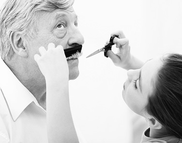

Blog

Why I Grew a Mustache
This website template was originally designed by Free Website Templates for you, for free. You can replace all this text with your own text.
In the Country
Want an easier solution for a Free Website? Head straight to Wix & immediately start customizing your website!